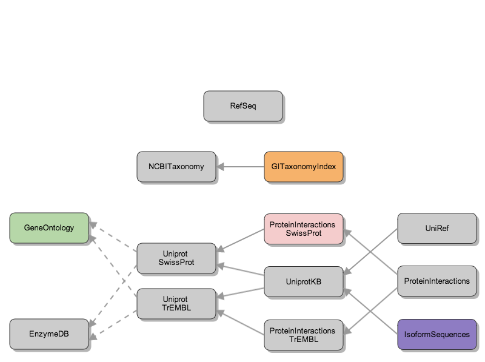
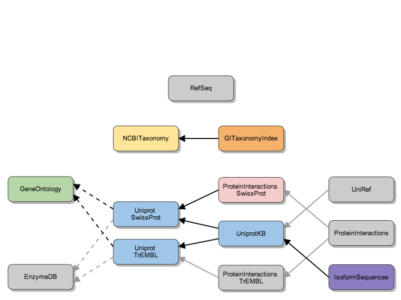

Bio4j + Statika
Alexey Alekhin
Graph Devroom @ FOSDEM 2014
Bio4j modules
Bio4j customization

Bio4j custom releases

Goals
Flexible module system
Simple import process
Dependencies management
Easy and robust deployment
Abstract module system
Modules as Scala types —
bundles
They can
depend
on each other!
It’s validated by compiler —
i.e.
statically
Linearizing types graph to get them in the right order
Managing artifacts
Packing bundles into versioned artifacts (jars)
Reusing
SBT
(Simple Build Tool) infrastructure
Standardizing settings and release process with the
sbt-statika plugin
Deployment
Amazon Web Services
+
aws-statika lib
Bundles can be
applied
, i.e. deployed it to an EC2 instance
Statika
distributions
— an abstraction for the cloud infrastructure specifics
Bio4j + Statika
Defining Bio4j modules
Decomposing it:
Raw data
Node/relations type defs
Importing process
Exposing some API
Inner bundles layout
Incremental import
Incremental import of data
to existing Bio4j distributions
Not repeating already done work
Easy to describe abstractly
Custom release of Bio4j
create a release-bundle with needed modules
be sure not to spend resources on a wrong configuration —
compile it!
use tools for easy release and deployment:
sbt-statika
+
statika-cli
Summary
Bio4j + Statika = win!
Abstract
layout of bundles
Hierarchy of
concrete
modules
Tracking deps on
all levels
Doing it at
compile time
Using AWS
cloud
infrastructure
for the actual work